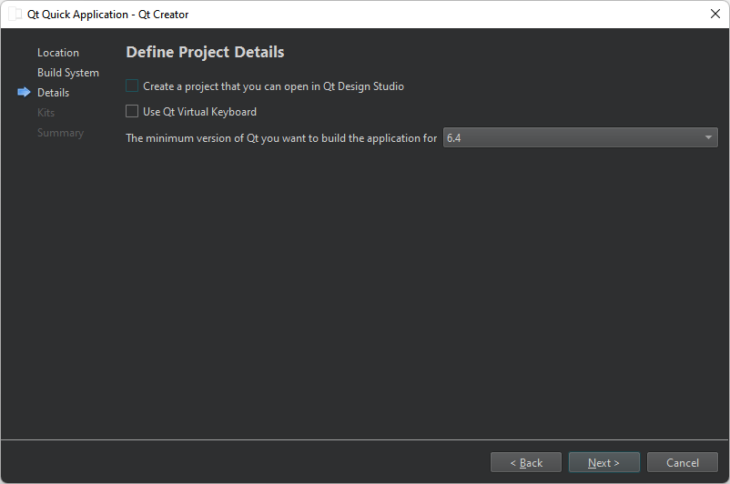

Create Qt Quick Applications
You can create Qt Quick applications that can have both QML and C++ code. Build the applications and deploy them to desktop, embedded, and mobile target platforms.
You can select an option to create a project that you can open in a separate visual editor, Qt Design Studio.
To create a Qt Quick Application project:
- Select File > New Project > Application (Qt) > Qt Quick Application > Choose.

Note: To use qmake as the build system, develop with Qt 5, or add translations to the application, select Qt Quick Application (compat).
- In the Project Location dialog, Name field, enter a name for the project. Keep in mind that you cannot easily change the project name later.
- In the Create in field, enter the path for the project files. Select the Use as default project location check box to create new projects in this folder by default. You can move project folders later without problems.
- Select Next (or Continue on macOS) to open the Define Build System dialog.

To create a project that you can develop with a visual editor in Qt Design Studio, select Create a project that you can open in Qt Design Studio.
- In the Build system field, select the build system to use for building and running the project: CMake or Qbs.
- Select Next to open the Define Project Details dialog.
- Select the Qt version to develop with in the Minimum required Qt version field. The Qt version determines the Qt Quick imports that are used in the QML files.
- Select the Use Qt Virtual Keyboard check box to add support for Qt Virtual Keyboard to the application.
Note: If you have not installed the Qt Virtual Keyboard module when you installed Qt, an error message will appear when you try to open Main.qml for editing. You can use Qt Maintenance Tool to install Qt Virtual Keyboard.
- Select Next to open the Kit Selection dialog.
- Select kits for the platforms that you want to build the application for.
Note: Kits are listed if they have been specified in Preferences > Kits. For more information, see Add kits and Kits.
- Select Next to open the Project Management dialog.
- Review the project settings, and select Finish (on Windows and Linux) or Done (on macOS) to create the project.
Qt Creator creates a QML file, Main.qml, that you can modify in the Edit mode.
See also Create Qt Quick UI Prototypes, Creating a Mobile Application, Creating a Qt for Python Application with Qt Quick, Creating a Qt Quick Application, Creating Projects, and Developing Qt Quick Applications.